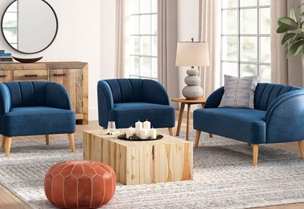
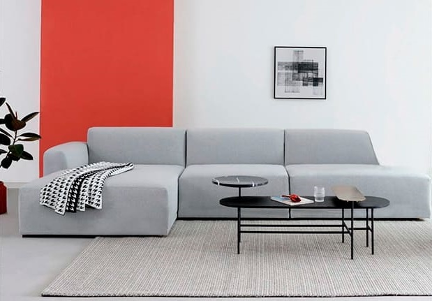
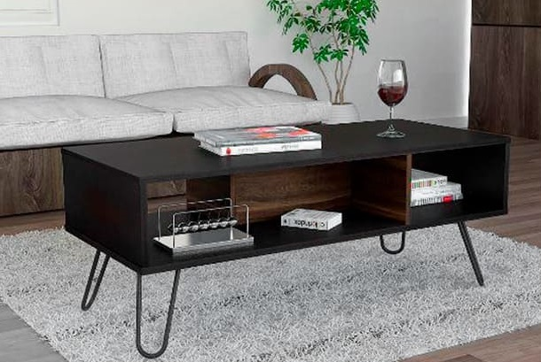

Muebles de sala: ¿Qué tipo de muebles es ideal para mí?
¿Estás pensando remodelar tu sala? Aquí te dejamos algunos de los tipos de muebles de sala que deberías tener en cuenta a la hora de diseñar ese espacio en común de tu hogar.
Los muebles más destacados son juegos de sala, muebles seccionales, mesas de centro y los centros de entretenimiento. ¿Ya los conocías? Te contamos más sobre ellos aquí mismo.

Juegos de sala
Llamamos juegos de sala a la composición de muebles que podemos variar para armonizar un espacio. Por ejemplo, un juego de sala 3-2-1 es un conjunto de muebles formado por un sillón de 3 asientos, un sillón de 2 asientos y un sillón de un único asiento.
La composición de los muebles dependerá del tamaño de tu sala y el estilo que quieres mostrar.
El tipo de tapiz o tela dependerá de varios factores, por ejemplo, si tienes mascotas en casa, te recomendamos los tapiz de cuero o tejido que ofrecen mayor durabilidad.
Por otra parte, si deseas mostrar elegancia podrías usar tapiz de tipo terciopelo. La limpieza del tapiz es muy importante, debido a que algunos requieren limpieza especial,
esto debes consultar al fabricante.
Muebles seccionales
Los muebles seccionales son muebles que tienen la capacidad de adaptarse y configurarse de diversas maneras de acuerdo a la necesidad del usuario. Por ejemplo, tenemos muebles seccionales en forma de L y muebles seccionales en forma de U. Los seccionales en forma de L pueden estar orientados a la derecha o la izquierda. Los muebles seccionales en forma de U son recomendables para ambientes amplios ya que aportan asientos en tres zonas, esto puede ser ideal para familias numerosas o que generalmente se reciben muchos invitados.

Los muebles seccionales en forma de L son recomendables para ambientes más pequeños; sin embargo, el diseño permite tener mayor versatilidad y flexibilidad en los distintos tipos y tamaños de sala. La elección de tu seccional también va acompañado del tapiz y este similar a los juegos de sala dependerá de lo que quieras transmitir y las necesidades particulares.
Mesas de centro
La mesa de centro es un mueble relativamente pequeño. Se suele colocar, generalmente, en el centro de la sala y frente a los demás muebles. Las mesas de centro pueden estar diseñadas de diferentes materiales; por ejemplo, tenemos mesas de centro de madera, vidrio, metal o materiales compuestos.

Debes considerar el tamaño de la mesa de centro en relación a los demás sofás, una regla podría ser llegar a la mesa de centro desde los asientos sin dificultad. Si consideramos un espacio para beber o comer ciertos alimentos frente al televisor podrías considerar una mesa de centro con una superficie resistente a manchas y rayaduras.
Centro de entretenimiento
Un centro de entretenimiento es un mueble diseñado específicamente para alojar componentes electrónicos como televisores, consolas de videojuegos, equipos de sonido y otros dispositivos. Este debe estar situado en una zona de visualización amplia, es decir, debe poder verse desde distintas zonas de la sala de manera cómoda.
La zona del centro de entretenimiento debe tener a disposición tomas de corrientes cercanas. Considera que el centro de entretenimiento debe estar situado en una zona ventilada para evitar el sobrecalentamiento de los dispositivos electrónicos.
Hemos detallado algunos de los muebles más comunes considerados a la hora de diseñar una sala, siempre consulta la garantía y durabilidad de los muebles que deseas para tu sala,finalmente, recuerda que al final la elección es tuya y debe tener la personalidad y funcionalidad que tú deseas transmitir.